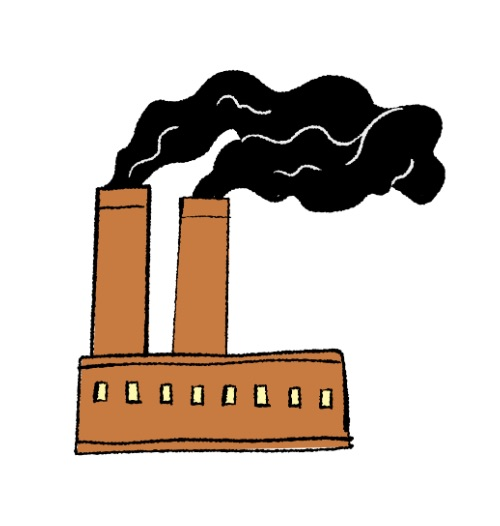
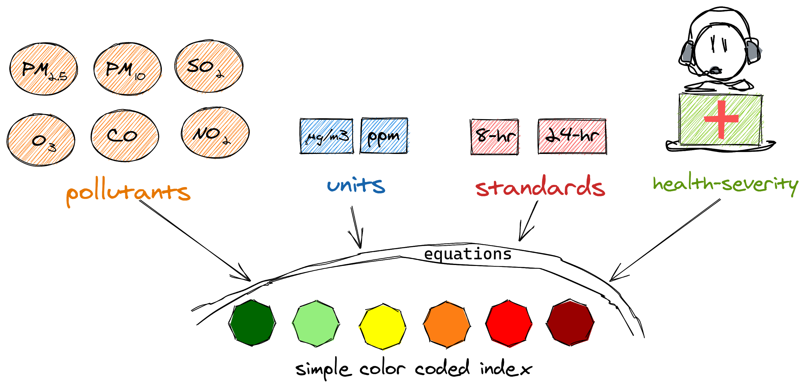

Air pollution is one of the most important environmental threats to urban populations and
while all
people are exposed, pollutant emissions, levels of exposure, and population vulnerability
vary
across neighborhoods. Exposures to common air pollutants have been linked to respiratory and
cardiovascular diseases, cancers, and premature deaths. Getting a deeper look into pollution
levels/ factors in California specifically could give an insight as to what people are being
exposed to.

PM2.5 can evade our bodies’ defenses, penetrating deep into the lungs and even entering the bloodstream.
It has been shown to exacerbate asthma and other lung disorders, and increase the risk of heart attack and stroke.
This microscopic pollution, named because each particle is smaller than 2.5 micrometers across, has also been
linked to developmental problems in children and cognitive impairment in the elderly, as well as premature labor
and low birth weights.

Climate change, and the hot, dry conditions it creates, has led to more catastrophic Western fires
and, with them, more air pollution. But fire hazards are also increasing because of greater development
in areas abutting wildlands, the over-suppression of natural wildfires, and aging electrical infrastructure.
Clear Skies, Clouded Lungs: AQI Insights Across California
Air quality in bay area is most majorly affected by transportation emissions.
The map shows the distribution of AQI values in different counties of California.
highlights Los Angeles as the county with the worst air quality.
This is also an effect of rising temperatures in California.
El Dorado and Lakes were two counties with the best AQI levels in 2023.
Fluctuating Air Quality as Summer Draws to a Close
Bay Area air quality has often taken a turn for the worse as the calendar flips from summer to fall,
with spikes in particulate-matter pollution correlating closely with major wildfires.
Over the past 10 years, Bay Area air quality has shown a trend of increasingly common spikes in
pollution later in the summer,
which come with increased health risks.
Fine particulate matter (PM2.5) pollution is shown in the line chart above.
How does AQI values vary in different parts of the Bay Area?
Air is almost always on the move, and pollution can easily drift from one reporting zone to another.
This is particularly true in the Bay Area, which forms a single air basin, and where winds can blow pollution
from one location into neighboring valleys.In 2023, the Bay Area's Air Quality Index (AQI) revealed dynamic patterns
of pollution levels across its regions, showcasing areas with both high and low concentrations of pollutants.
The main data is collected from https://data.gov.
It comes from U.S. Government's Open Data which is a tool for helping the public understand different public concerns like air pollution hazard.
The dataset was last updated in December 2023.
FIPS codes for CA Counties was collected from https://www.weather.gov/hnx/cafips
Data and information for the top level charts is derived from
California Air Resources Board.
CARB is charged with protecting the
public from the harmful effects of air pollution and developing programs and actions to fight climate change. It is the lead agency for
climate change
programs and oversees all air pollution control efforts in California to attain and maintain health-based air quality standards.